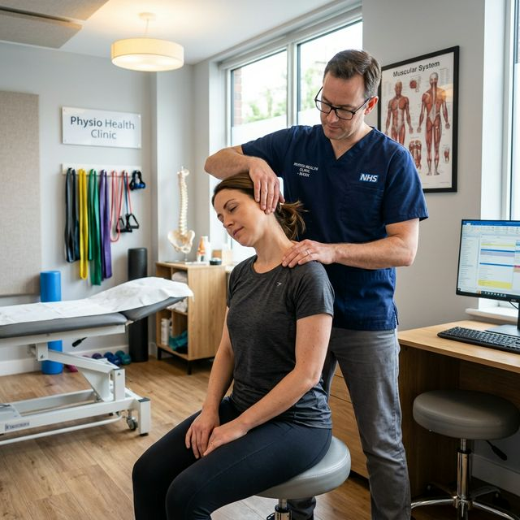

The Ultimate Guide to Relieving Neck Pain and Stiff Neck Naturally

Chronic neck stiffness—often called "Tech Neck"—has become one of the most common reasons for physiotherapy visits in Wayanad. Understanding why your neck hurts is the first step toward long-term relief.
At Physio Dynamics Panamaram, our clinical team works with students, office workers, and elderly patients to correct postural imbalances and restore normal movement through targeted rehabilitation.
The Science Behind Your Stiff Neck
The human head weighs approximately 5 kilograms. However, for every inch your head tilts forward, its effective weight doubles. This puts enormous strain on the cervical vertebrae and surrounding muscles.
- Muscle Knots (Trigger Points): Tight muscles form small painful bumps that can cause headaches.
- Joint Stiffness: Lack of movement in the vertebrae leads to reduced range of motion.
- Nerve Compression: Disk issues can cause tingling or numbness down your arms.
5 Expert-Recommended Stretches for Immediate Relief
Deep Chin Tucks
Why it works: This is the foundation of posture correction. It strengthens the front neck muscles while stretching the base of the skull.
- Sit tall and look straight ahead.
- Slowly draw your chin straight back, as if making a "double chin." Do not tilt your head up or down.
- Hold for 5 seconds and repeat 10 times.
Scalene & Trapezius Stretch
Why it works: These muscles often tighten when you are stressed or concentrated on a computer screen.
- Sit upright and place one hand under your chair to anchor your shoulder.
- Gently tilt your head toward the opposite shoulder.
- Use your other hand to provide very light pressure if needed.
- Hold for 30 seconds per side. Repeat 3 times.
Shoulder Blade Squeezes
Why it works: A stable neck requires a stable base. This exercise opens up the chest and puts the shoulders in the correct position.
- Squeeze your shoulder blades together as if trying to hold a pencil between them.
- Hold for 10 seconds.
- Repeat 15 times daily.
Ergonomic Guide for Digital Workers in Wayanad
If you spend more than 3 hours a day on a laptop or smartphone, follow these rules:
Monitor Height
The top of your screen should be at eye level so you aren't looking down constantly.
Phone Posture
Bring your phone up to your eyes instead of bending your neck down to see it.
Common Questions (FAQ)
When to visit Physio Dynamics
If your neck pain causes dizziness, severe nausea, or radiating pain into your fingers, visit our Panamaram clinic immediately for neurological screening.
Find Our Clinic
Physio Dynamics
UB City Centre Building, Near Crescent Public School,
Panamaram, Wayanad, Kerala 670721
+91 62829 29104
physiodynamics10@gmail.com
Mon - Sat: 8:00 AM - 7:00 PM
Sunday: Closed (Emergency Only)